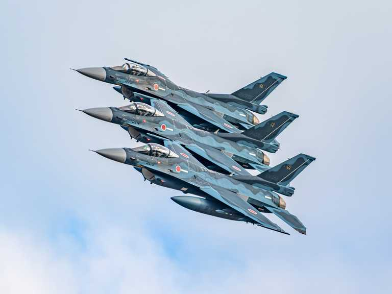
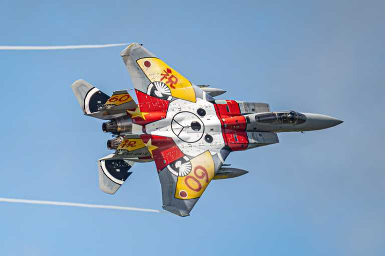

Skip to content
Timothy Liu
Aviation photographer
Mitsubishi F-15J EagleNaha Air Base · 2025
Selected work
Boeing AH-64D Apache LongbowChangi Exhibition Center · 2026

Mitsubishi F-2ATsuiki Air Base · 2025
Boeing E-4B NightwatchSingapore · 2024

Mitsubishi F-15J EagleChitose Air Base · 2024
Boeing 747-400(F)Hong Kong International Airport · 2025
Airbus A330 MRTTSingapore · 2023